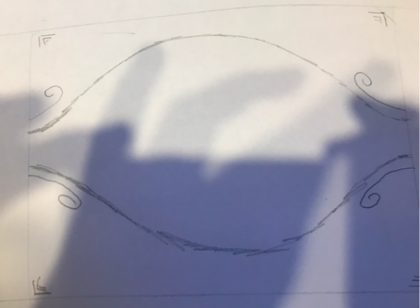
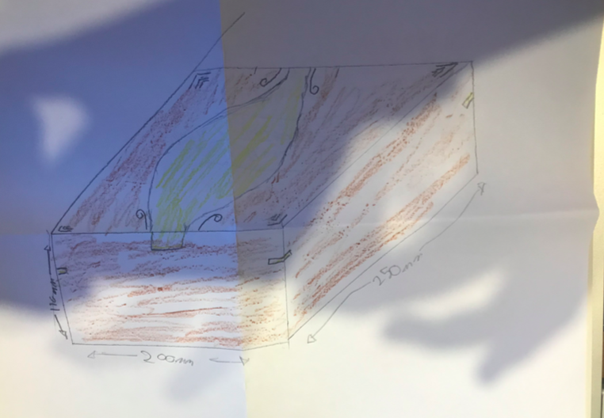
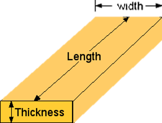

Box desing folio
Introduction
Small item storage is a common issue that is encountered in households and offices.
They can be but are not limited to items like jewellery, pens, pencils and mobile phones or tablets.
Having an aesthetically pleasing storage system that will securely hold these items can help an
individual
organise their space more efficiently while still remaining pleasing to the user.
The Task
Your task is to create a small storage box with a tray, you will design a custom pattern for the lid and base
of your box.
The design will include at least one specialised joint that you have researched prior to producing the
project.
You must document your research, thoughts and ideas in the following pages of this design folio. All
work
must be your own, however, you may get assistance from your parents, siblings, or other family members
to
develop your ideas.
Restrictions
Your design cannot have a length or width greater than 250mm or a height greater than 150mm.
Shenton College will only supply Pine and a limited amount of Jarrah timber for your production. If you
require any other timber type this must be provided by you.
Fittings such as hinges and latches must all be supplied by you. Due to the high cost and many different
types available it is not feasible for Shenton to stock all types fittings.
Design Inspiration – Existing Products

| Positives | Aesthetically apealing. |
| Negitives | Dificult to make. |
| Interesting | Doesn't look lacquered |

| Positives | Verry smooth. |
| Negitives | Plain and basic design |
| Interesting | Lid looks slightly warped |

| Positives | Multiple compartments. |
| Negitives | Plain and basic design |
| Interesting | Lined with red fabric |

| Positives | It has a handle. |
| Negitives | it ueses Lots of pine |
| Interesting | Lid is smaller than box |
Design Inspiration – Joint Investigation
Half Lap Joint

| Information about Joint: | A lap joint or overlap joint is a joint in which the members overlap. Lap joints can be used to
join wood, plastic, or metal. A lap joint may be a full lap or half lap. |
| Would it be useful to your project and why? | No I don’t like it. |
Mitre Joint with Spline

| Information about Joint: | A spline is a strip of wood, plywood, or other material (such as Masonite), inserted into
matching grooves or plows, along the edges of two boards. The purpose is to reinforce and align the edges. A spline can be used as a substitute for the tongue and groove. |
| Would it be useful to your project and why? | Yes it looks cool. |
Dovetail Joint

| Information about Joint: | A dovetail joint or simply dovetail is a joinery technique most commonly used in woodworking joinery, including furniture, cabinets, log buildings, and traditional timber framing. Noted for its resistance to being pulled apart, the dovetail joint is commonly used to join the sides of a drawer to the front. |
| Would it be useful to your project and why? | Yes it is resistant to being pulled apart and it looks cool. |
Dowel Joint

| Information about Joint: | Dowels are round wooden pins of small diameter used to strengthen (reinforce) a butt joint. |
| Would it be useful to your project and why? | No I don’t want to use it. |
Statement of Intent
I am tasked with designing a small wooden box that can’t be bigger than 250mm x 250mm x 150mm. I like
jarrah
with a small amount of pine, don’t intend to use hinges. I plan on having a stain pine inlay in the lid
of
the storage unit to make it more aesthetically pleasing while having small compartments within the unit
for
more storage. This storage unit is being made for myself because its cool.
Concept Sketches


Concept Development


Final Rendered Sketch of your design

Standard Timber sizes
When timber is milled it is cut into specific sizes.
Your project must be made from these specific sized
pieces of wood as these are what we as the school can buy.
The standard sizes apply to the width and
thickness of the wood.

Cuting list.
| Quantity | Dimentions | Type of wood |
| 2 | 200mm(220 including waste) * 70mm | Jarah |
| 2 | 250mm(270 including waste) * 70mm | Jatah |
| 1 | 250mm * 200mm | Jarah |
| 2 | 95mm * 250mm | Jarah |
| 1 | 90mm * 250mm | Pine |
Production Log
A production log is an visual diary about how you make your project.
You will need to take at least 10
photos of the production of your project at different stages in the production.
Each photo will require
an explanation using correct terminology about the process that you are using.
Final Product
Evaluation
What trouble did you have producing your project and what would you do in future to avoid this issue?
Was the joint you selected for your project an appropriate choice? Is there another joint that you feel
may
have been better suited?
What is your favourite feature of the project, or what part do you feel you did very well?
Overall how happy are you with your project?